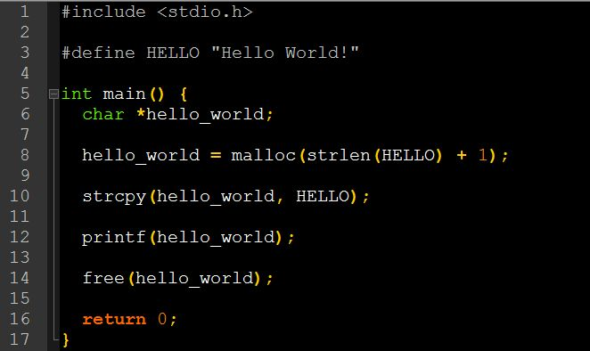

La memoria
July 1, 2025 | ES
 Miguel García
Miguel García
La memoria (o falta de ella). Me refiero a la RAM.
Una cosa que te enseña el lenguaje C (por eso me gusta tanto), es a controlar en todo momento lo que estás haciendo.
Algo odiado y amado a partes desiguales, son los punteros.
Los punteros, dicho pronto y mal, son variables que apuntan a una dirección de la memoria (RAM, ROM y esas cosas).
Eso, de por sí, ya da repelús al taitantos por ciento de los programadores (mogollón, no nos engañemos).
Y si los mezclamos con malloc() y free(), las constantes vitales de la mayoría se van al garete.
Y total, ¿por qué? Porque es incómodo (un peñazo, un rollo, un me aburre, con lo bien que estaba yo sin esto), tener que estar con el ojo derecho viendo lo que escribimos, y con el izquierdo no perdiendo de vista al susodicho puntero de tres líneas más arriba.
Y si son dos, el desmadre emocional es insostenible, esperable e irreprimible, todo acaba en "ible". Terrible, horrible, insufrible... vale, lo dejo ya.
Y entonces, ¿por qué me gusta tanto el lenguaje C? ¿Me gusta sufrir? ¿No salgo de mi zona de no-confort?
Pues no: porque se aprende la tira.
Hay programadores que creen que la memoria es infinita. Pues no, es finita (y no me refiero a tener tipín), se acaba, no hay más, te apañas con lo que hay, deja algo para los demás.
Y por eso, la memoria, hay que utilizarla sin abusar, lo justo, lo necesario, como si cada byte te costara un euro. A ti.
Y en eso, el lenguaje C, es el mejor profesor. A las malas, eso sí, pero aprendes o te largas a hacer encaje de bolillos.
Y llega el turno de las anécdotas.
Recuerdo como si fuera hace seis años (como ayer no, para qué nos vamos a engañar), el día que nos petó en toda la cara, y en producción, una funcionalidad que mostraba, tras consultar una API de terceros en tiempo real, una serie de datos.
Pues bien, el error vino originado porque la API devolvía unos trescientos trillones de objetos (usuarios conectados a la red wifi, y no diré más si no es en presencia de mi confesor) y, claro, aquello petaba que daba gusto (es un decir).
Era un proceso PHP y, por configuración, no se le podía asignar más de 8 MB de memoria (algo así).
El compi que desarrolló esta funcionalidad, encontró una solución: subir a 16 MB.
Al día siguiente, tuvo que subir a 32. Al otro, a 64. Y así, hasta que aquello no iba ni para atrás. Vamos, que de petar no lo salvaba nadie.
Eso, sin contar que se tiraba nosecuántos minutos procesando el mogollón.
A todo esto, el cliente hecho una furia, ¡qué poca paciencia, ni que hubiese pagado por ello!
Y, por fin, un día, encontró la solución definitiva. Me dijo: ¡Miguel, ya no salta el error!
Yo no cabía en mí de gozo, de ilusión, de alegría, de llevar una talla menos de pantalón.
¿Y qué has hecho? Pregunté, con la mente abierta, ávida, deseando aprender de un gurú como aquél.
- He quitado el botón.
Todavía sufro secuelas.
Lo peor: es cierto. Lo mejor: sobreviví para contarlo.
Y para finalizar, el "Hello World!" de toda la vida, en C, pero complicado.
